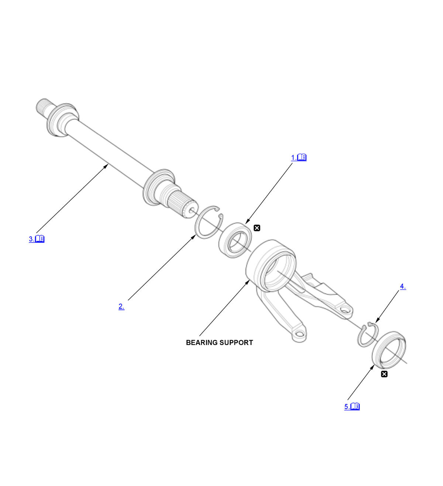

Intermediate Shaft Disassembly and Reassembly (K20C1 (M/T)) (2017 2018 2019 2020 2021): Reassembly: Procedure
NOTE:
Numbered call-outs in figure pertain to list numbers in following procedure.

Courtesy of HONDA, U.S.A., INC. |
Detailed information, notes, and precautions |
 |
Replace |
- Intermediate Shaft Bearing - Install
1. Press the intermediate shaft bearing (A) into the bearing support (B) using the 15 x 135L driver handle, the 52 x 55 mm bearing driver attachment, and a press. - Internal Snap Ring - Install
- Intermediate Shaft - Install
1. Press the intermediate shaft (A) into the shaft bearing (B) using the support base, the support base attachment and a press. - External Snap Ring - Install
- Outer Seal - Install
1. Install the outer seal (A) into the bearing support (B) using the 45 x 55 mm installer attachment and a press. Press in the seal until it is even with the surface of the bearing support.